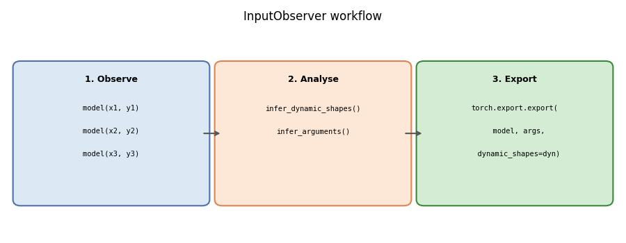
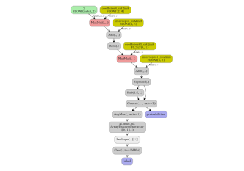

Note
Go to the end to download the full example code.
InputObserver: recording inputs for ONNX export¶
InputObserver is a context manager
that steals a model’s forward method during inference to record every set of inputs
and outputs. After the context exits, the collected data can be used to:
infer which tensor dimensions are dynamic across the observed calls, and
build a representative set of export arguments (with empty tensors for optional inputs that were missing in some calls).
These two pieces of information are exactly what torch.export.export() and
torch.onnx.export() need.
The example below shows three progressively richer scenarios:
Positional args — two plain tensors whose batch and sequence lengths vary across calls.
Keyword args — same model, but inputs are passed as named arguments.
Optional argument — a model where one input (
mask) is absent in some calls. Thevalue_if_missingparameter tells the observer what substitute to use when the argument is missing, so that dynamic shape analysis can still be performed.
Imports¶
import torch
import matplotlib.pyplot as plt
import matplotlib.patches as mpatches
from yobx.helpers import string_type
from yobx.torch.input_observer import InputObserver
1. Positional args — varying batch and sequence lengths¶
We start with the most basic case: a model that takes two float tensors and returns their element-wise sum. We run it with three different shapes so that the observer can detect that both dimensions are dynamic.
class AddModel(torch.nn.Module):
"""Adds two tensors element-wise."""
def forward(self, x, y):
return x + y
model_add = AddModel()
# Three calls with different shapes — batch size and sequence length both vary.
inputs_add = [
(torch.randn(2, 6), torch.randn(2, 6)),
(torch.randn(3, 7), torch.randn(3, 7)),
(torch.randn(4, 8), torch.randn(4, 8)),
]
observer_add = InputObserver()
with observer_add(model_add, store_n_calls=3): # 3 is the default maximum
for x, y in inputs_add:
model_add(x, y)
print("Observations stored:", observer_add.num_obs())
assert observer_add.num_obs() == 3
Observations stored: 3
infer_dynamic_shapes returns a tuple of per-argument shape specs, using
torch.export.Dim.DYNAMIC as a placeholder wherever a dimension varies
across calls.
Dynamic shapes: ({0: DimHint(DYNAMIC), 1: DimHint(DYNAMIC)}, {0: DimHint(DYNAMIC), 1: DimHint(DYNAMIC)})
infer_arguments returns one representative set of inputs — usually the
first observed set — suitable for passing to torch.export.export().
Inferred args: (T1s2x6,T1s2x6)
Both dimension 0 (batch) and dimension 1 (sequence) are marked dynamic for both tensors because they changed across the three observed calls.
2. Keyword args — same model, named inputs¶
InputObserver works identically when the model is called with
keyword arguments. The inferred dynamic shapes are returned as a
dict (one entry per named argument) instead of a tuple.
class LinearModel(torch.nn.Module):
"""Applies a linear transformation: out = x @ W + b."""
def __init__(self, in_features: int, out_features: int):
super().__init__()
self.weight = torch.nn.Parameter(torch.randn(out_features, in_features))
self.bias = torch.nn.Parameter(torch.zeros(out_features))
def forward(self, x, labels=None):
logits = x @ self.weight.T + self.bias
if labels is not None:
loss = torch.nn.functional.cross_entropy(logits, labels)
return logits, loss
return logits
model_lin = LinearModel(8, 4)
# Three calls with varying batch size; sequence dim is absent here.
kwargs_lin = [
dict(x=torch.randn(2, 8), labels=torch.randint(0, 4, (2,))),
dict(x=torch.randn(5, 8), labels=torch.randint(0, 4, (5,))),
dict(x=torch.randn(7, 8), labels=torch.randint(0, 4, (7,))),
]
observer_lin = InputObserver()
with observer_lin(model_lin):
for kwargs in kwargs_lin:
model_lin(**kwargs)
print("\nObservations stored (linear):", observer_lin.num_obs())
dyn_lin = observer_lin.infer_dynamic_shapes()
print("Dynamic shapes (linear):", dyn_lin)
kwargs_inferred = observer_lin.infer_arguments()
print("Inferred kwargs:", string_type(kwargs_inferred, with_shape=True))
Observations stored (linear): 3
Dynamic shapes (linear): {'x': {0: DimHint(DYNAMIC)}, 'labels': {0: DimHint(DYNAMIC)}}
Inferred kwargs: dict(x:T1s2x8,labels:T7s2)
Dimension 0 is dynamic for both x and labels (batch size varies).
Dimension 1 of x is static (always 8, the fixed feature count).
3. Optional argument — mask present only in some calls¶
Sometimes a model argument is optional: it is passed during some steps
(e.g. when an attention mask is available) but absent in others.
Without extra information the observer cannot infer an empty tensor for
mask (it was never seen as an empty tensor). The value_if_missing
argument provides this information explicitly.
class MaskedModel(torch.nn.Module):
"""Applies an optional multiplicative mask to the input."""
def forward(self, x, mask=None):
if mask is not None:
return x * mask
return x
model_masked = MaskedModel()
# Three calls — the first omits the mask, the other two include it.
seq_len = 10
inputs_masked = [
dict(x=torch.randn(2, seq_len)), # no mask
dict(x=torch.randn(3, seq_len), mask=torch.ones(3, seq_len)),
dict(x=torch.randn(4, seq_len), mask=torch.ones(4, seq_len)),
]
# We tell the observer that when ``mask`` is absent it should be treated as an
# all-ones tensor with batch=0 (the zero batch dimension signals "optional").
observer_masked = InputObserver(value_if_missing=dict(mask=torch.ones(0, seq_len)))
with observer_masked(model_masked):
for kwargs in inputs_masked:
model_masked(**kwargs)
print("\nObservations stored (masked):", observer_masked.num_obs())
dyn_masked = observer_masked.infer_dynamic_shapes()
print("Dynamic shapes (masked):", dyn_masked)
kwargs_masked = observer_masked.infer_arguments()
print("Inferred kwargs:", string_type(kwargs_masked, with_shape=True))
Observations stored (masked): 3
Dynamic shapes (masked): {'x': {0: DimHint(DYNAMIC)}, 'mask': {0: DimHint(DYNAMIC)}}
Inferred kwargs: dict(x:T1s2x10,mask:T1s0x10)
mask appears in the inferred arguments with batch=0 (an empty tensor),
signalling that it is optional. Dimension 0 is dynamic for both x and
mask because the batch size varied across calls. Dimension 1 (sequence
length) is static because it was always seq_len.
4. Using the results with torch.export.export¶
The inferred arguments and dynamic shapes can be passed directly to
torch.export.export() or torch.onnx.export():
ep = torch.export.export(
model_add,
args_add, # representative inputs (tuple for positional args)
dynamic_shapes=dyn_add,
)
For models called with keyword arguments:
ep = torch.export.export(
model_lin,
(),
kwargs=kwargs_inferred,
dynamic_shapes=dyn_lin,
)
5. Diagram: how InputObserver works¶
The diagram below summarises the three-phase workflow.
fig, ax = plt.subplots(figsize=(9, 3.5))
ax.set_xlim(0, 12)
ax.set_ylim(0, 5)
ax.axis("off")
ax.set_title("InputObserver workflow", fontsize=12)
# Phase boxes
phase_data = [
(
0.2,
"#dce9f5",
"#4c72b0",
"1. Observe",
["model(x1, y1)", "model(x2, y2)", "model(x3, y3)"],
),
(4.2, "#fde8d8", "#dd8452", "2. Analyse", ["infer_dynamic_shapes()", "infer_arguments()"]),
(
8.2,
"#d5ecd4",
"#3a8a3a",
"3. Export",
["torch.export.export(", " model, args,", " dynamic_shapes=dyn)"],
),
]
for x0, fc, ec, title, lines in phase_data:
box = mpatches.FancyBboxPatch(
(x0, 0.8),
3.6,
3.2,
boxstyle="round,pad=0.15",
linewidth=1.5,
edgecolor=ec,
facecolor=fc,
)
ax.add_patch(box)
ax.text(x0 + 1.8, 3.7, title, ha="center", va="center", fontsize=9, fontweight="bold")
for i, line in enumerate(lines):
ax.text(
x0 + 1.8,
3.0 - i * 0.55,
line,
ha="center",
va="center",
fontsize=7.5,
family="monospace",
)
# Arrows between phases
for x in (3.8, 7.8):
ax.annotate(
"",
xy=(x + 0.4, 2.4),
xytext=(x, 2.4),
arrowprops=dict(arrowstyle="->", color="#555555", lw=1.5),
)
plt.tight_layout()
plt.show()

Total running time of the script: (0 minutes 0.131 seconds)
Related examples


Using sklearn-onnx to convert any scikit-learn estimator